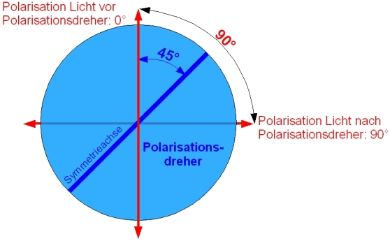

Schülerlabor Station 3b:
Polarisation und das Gesetz von Malus
Bei der dritten Station (Teil b) wird ein Experiment zur Polarisation aufgebaut. Bei diesem Experiment soll die Kombination aus einem polarisierendem Strahlteilerwürfel und einem Polarisationsdreher untersucht werden. Mit den aufgenommenen Zahlenwerten soll im Laborbuch ein Graph erstellt werden. Die Aufnahme von Daten und die Darstellung in einem Graphen ist eine normale Arbeitsmethode von Physikern. Für die Durchführung des Experimentes benötigst Du maximal 30 Minuten. Nach dem erfolgreichen Aufbau tauschst Du mit der Gruppe der Station 3b. Diese Station ist ebenfalls sehr kurz (30 Minuten). In der folgenden Animation wird der Aufbau des Experimentes Schritt für Schritt dargestellt. Eine Erklärung kann eingeblendet werden. Notiere in Dein Laborbuch ganz kurz die einzelnen Schritte zum Aufbau des Experimentes. Die Animation des Aufbaus liegt noch einmal in Papierform an der Station aus. Nach der Fertigstellung des Experimentes wird der Aufbau und die Ergebnisse im Laborbuch von eurem Betreuer begutachtet. Danach baut ihr das Experiment wieder ab.
Die Animation kann als PDF-Dokument heruntergeladen werden: Station_3b
Hinweis zum Polarisationsdreher:
Soll die Polarisationsrichtung des Lichts um z. B. 90° gedreht werden, so darf der Polarisationsdreher nur auf die Hälfte (45°) des zu drehenden Polarisationswinkels eingestellt werden. Dies ist eine optische Eigenschaft der Polarisationsdreher. Polarisationsdreher besitzen eine Symmetrieachse (optische Achse), die als Spiegelachse für die Polarisation betrachtet werden kann (Abb. 1).

Abb. 1: Optische Achse als Symmetrieachse beim Polarisationsdreher
Autoren: A. Vetter, P. Bronner, Januar 2009